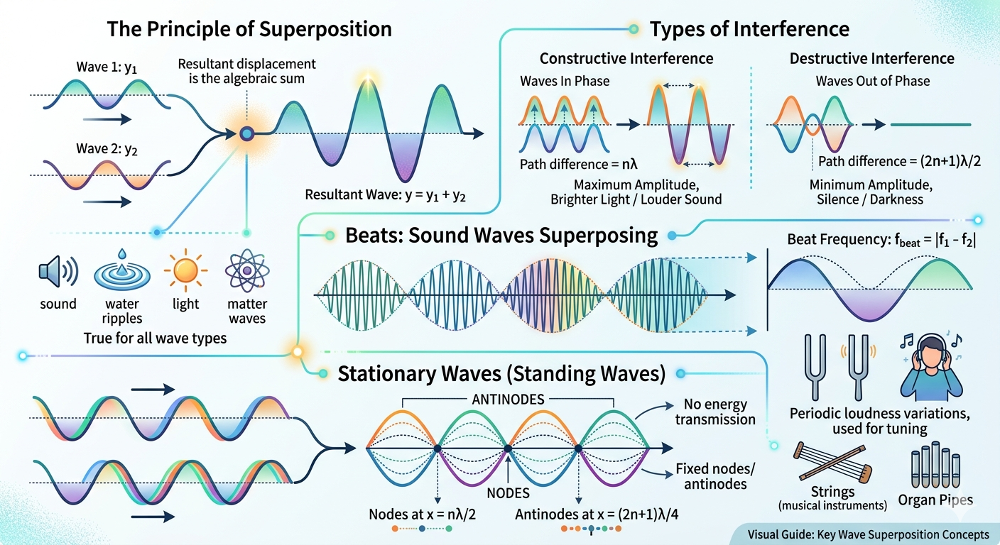

Superposition of Waves

Image generated by Google AI
Imagine this: you are standing by a quiet pond early in the morning. You pick up a stone and toss it gently into the water. Ripples begin to spread outward in perfect circles. Now, someone else throws another stone at a different spot. The ripples meet, and something magical happens.
Have you ever watched ripples on the surface of a pond when two stones are thrown at different points? When the circular waves from each stone meet, they interact with each other. Sometimes the ripples add up and become stronger, and sometimes they cancel each other out. This fascinating phenomenon is called the Superposition of Waves.
If you pause and think deeply, this is not just about water. This is a universal rule of nature. Whether it is sound reaching your ears, light entering your eyes, or even quantum particles behaving like waves, this idea quietly governs everything.
It is one of the most fundamental and powerful principles in wave physics. It explains how musical instruments produce harmony, how noise-cancelling headphones work, and how light and sound can form interference patterns. Let us dive into this beautiful concept.
What is Superposition of Waves?
Let us build this from intuition. A wave is essentially a disturbance traveling through space or a medium. Now imagine two disturbances arriving at the same point at the same time, what should happen?
The universe takes the simplest route: it adds them.
The Principle of Superposition states:
When two or more waves meet at a point in a medium, the resultant displacement is the algebraic sum of the displacements due to the individual waves.
Mathematically, if two waves have displacements \( y_1 \) and \( y_2 \), then the resultant wave at a point is:
Here is a subtle but powerful idea: this works only because most physical systems (for small disturbances) are linear. That means the governing equations (like the wave equation) allow simple addition of solutions. This is why waves don’t “destroy” each other permanently, they simply pass through after interacting.
This principle holds true for all types of waves, mechanical waves (like sound or water), electromagnetic waves (like light), and matter waves.
Conditions for Superposition
Before waves can “talk” to each other, a few conditions must be satisfied. Think of it like two musicians trying to play together, they need compatibility.
- The waves should be of the same type (e.g., sound with sound, light with light).
- They should overlap in space and time.
- The medium must be linear (obey Hooke’s law).
That last condition is especially deep. Hooke’s law ensures that restoring force is proportional to displacement, which keeps the system linear. If the system becomes non-linear (like very large waves in the ocean), superposition starts to break down!
Types of Interference
Now comes the real beauty. When waves superpose, they don’t just add randomly, they create patterns. This is called interference.
When two waves superpose, they interfere with each other. There are two main types:
1. Constructive Interference
Imagine two friends pushing a swing at the same time in sync. The swing goes higher and higher. That is constructive interference.
If the two waves are in phase (peaks align with peaks and troughs with troughs), the amplitudes add up:
Result: Maximum amplitude, loud sound, or bright light.
Condition: Path difference \( = n\lambda \), where \( n = 0,1,2,... \)
Physically, this means both waves have traveled distances that differ by whole wavelengths, so they arrive perfectly “in step.”
2. Destructive Interference
Now imagine pushing the swing exactly opposite to your friend, one pushes forward, the other backward. The swing barely moves.
If the waves are out of phase (peak meets trough), the amplitudes cancel out:
Result: Minimum amplitude, silence, or darkness.
Condition: Path difference \( = (2n+1)\frac{\lambda}{2} \)
This is exactly the principle used in noise-cancelling headphones—they generate a wave that is out of phase with incoming noise!
Interference Pattern
When constructive and destructive interference happen repeatedly in space, a pattern emerges, bright and dark fringes, loud and quiet zones, peaks and still regions.
The alternate regions of constructive and destructive interference form an interference pattern. This pattern is visible in water ripples, sound zones, and light fringes (as in Young’s double slit experiment).
A deep insight here: interference patterns are direct evidence of the wave nature of light and matter. In fact, even electrons can produce such patterns!
Mathematical Representation of Superposition
Let us now translate this beauty into mathematics. Suppose two waves are traveling together:
Let two waves travelling in the same direction be:
Here, \( \phi \) represents the phase difference; a key player in determining the outcome.
Using the identity:
The resultant displacement is:
Notice something subtle: the wave still oscillates with the same frequency and wave number, but its amplitude has changed.
Thus, the resultant amplitude becomes:
So the amplitude depends on the phase difference \( \phi \). If \( \phi = 0 \), it is maximum (constructive), and if \( \phi = \pi \), it is zero (destructive).
Beats: Sound Waves Superposing
Have you ever tuned a guitar or heard two nearly similar sounds “wobble”? That pulsing sound is called a beat.
When two sound waves of slightly different frequencies interfere, they produce periodic variations in loudness. This phenomenon is known as beats.
Beat Frequency
If two frequencies \( f_1 \) and \( f_2 \) interfere, the beat frequency is:
Number of beats heard per second equals the difference in frequencies. This is used in tuning musical instruments.
Physically, what is happening is amplitude modulation, one wave acts like a carrier while the other modulates it.
Expression for Beats
Let:
Using trigonometric identity:
This represents a wave of average frequency modulated by a varying amplitude.
Stationary Waves (Standing Waves)
Now imagine a string tied at both ends, like a guitar string. When plucked, waves travel back and forth, interfering with themselves.
When two identical waves travelling in opposite directions interfere, a stationary wave is formed.
Let:
The superposed wave is:
Here is the key idea: the spatial part \( \sin(kx) \) and time part \( \cos(\omega t) \) are separated. This means energy does not travel, the wave just oscillates in place.
This wave has fixed points of zero displacement (nodes) and points of maximum displacement (antinodes).
Characteristics of Stationary Waves
- Energy is not transmitted.
- Nodes and antinodes are fixed.
- Formed in organ pipes, strings, etc.
Conditions for Nodes and Antinodes
- Nodes: \( \sin(kx) = 0 \Rightarrow x = n \frac{\lambda}{2} \)
- Antinodes: \( \sin(kx) = \pm 1 \Rightarrow x = (2n + 1)\frac{\lambda}{4} \)
Where \( n = 0, 1, 2, \ldots \)
If you lightly touch a vibrating guitar string at a node, it does not move at all, that is why harmonics can be created so precisely.
Applications of Superposition
Once you start noticing, superposition is everywhere around you:
- Tuning musical instruments using beats
- Noise-cancelling headphones (destructive interference)
- Designing auditorium acoustics
- Formation of stationary waves in pipes and strings
- Radio and TV signal processing
- Optical interference in lenses and coatings
Even modern technologies like holography and quantum computing rely on interference principles!
Shortcut Concepts
- Resultant wave: \( y = y_1 + y_2 \)
- Constructive interference: \( \phi = 0, \, \Delta x = n\lambda \)
- Destructive interference: \( \phi = \pi, \, \Delta x = (2n+1)\frac{\lambda}{2} \)
- Beat frequency: \( f_{\text{beat}} = |f_1 - f_2| \)
- Standing wave: \( y = 2A \sin(kx) \cos(\omega t) \)
- Nodes at: \( x = n \frac{\lambda}{2} \), Antinodes at: \( x = (2n+1) \frac{\lambda}{4} \)
Quick Review Questions
- What is the principle of superposition?
- What are nodes and antinodes in a stationary wave?
- When do beats occur in sound waves?
- What is the beat frequency if two sound waves have frequencies 256 Hz and 260 Hz?
- What is the condition for constructive interference?
Previous Year Question (PYQ)
Q.1
The velocity of sound in a gas in which two wavelengths 4.08 m and 4.16 m produce 40 beats in 12 seconds, will be: [JEE, 2022]
Options:
(a) 282.8 m/s
(b) 175.5 m/s
(c) 353.6 m/s
(d) 707.2 m/s
Solution:
Let us decode this step by step, just like a physicist would.
Step 1: Calculate beat frequency
Step 2: Let the speed of sound be \( v \)
Frequencies:
Since beat frequency is the difference of frequencies:
Now:
Answer: (d) 707.2 m/s